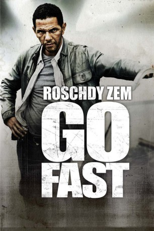
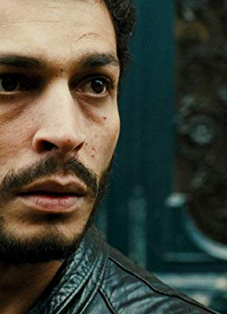

#7491 Go Fast
 
 IMDB-Wertung: 5.8 / 10
IMDB-Wertung: 5.8 / 10  Metascore: 0
Metascore: 0 
Marek, Agent der französischen Drogenbehörde, hat gerade seinen Kollegen und besten Freund bei einer Operation gegen ein Netz von Drogenkurieren verloren. Doch das treibt ihn bei seiner Arbeit gegen die kriminellen Machenschaften der Schmuggler nur an: Als Undercoveragent infiltriert er eine Gang, die große Mengen Cannabisharz aus Spanien nach Frankreich importiert. Ihre Methode nennt die Gang "Go Fast": Schnelle Autos, voll beladen mit Drogen, rasen mit Höchstgeschwindigkeit aus dem Süden Spaniens ins eigene Land. Eine rasante Jagd beginnt...
Jahr: 2008
Dauer: 89 Minuten
FSK:
Land: Frankreich Studio: Koch MediaTonspuren:
Untertitel: Deutsch,
Auflösung: 1080p (1920x816) Größe: 6574 MB
Genre: Action, Thriller, Drama, Krimi
Regisseur: Olivier Van Hoofstadt
Drehbuch: Bibi Naceri
Soundtrack:
Darsteller:
 Roschdy Zem als Marek / Slimane
Roschdy Zem als Marek / Slimane Olivier Gourmet als Jean-Do Paoli
Olivier Gourmet als Jean-Do Paoli Grégory Gadebois als John Wahl
Grégory Gadebois als John Wahl- Catalina Denis als Gladys
- Raphaël Charlier als Raphaël
- Jocelyn Lagarrigue als Sylvain
- Julie Durand als Nadia
- Mourade Zeguendi als Luigi
- David Saracino als Fred
- Raphaël Marciano als Fourgue
- Nicolas Bougourd als Thomas
- Marie Payen als Véronique
- Jil Milan als Lucien
- Evariste Kayembe-Beya als N'Diaye
- Samir Maagouz als Samir
- Mathias Gomis als Gardien de la paix
- Michèle Seeberger als Andrieu
- Xavier Maly als Evrard
- Jean-Claude Lagniez als Jojo le turbo
- Bibi Naceri als Maître nageur
- Karim Traika als Said
-  Adel Bencherif als Sed
- Caroline Breton als Amandine
- Fred Epaud als Wilfrid
- Jérôme Daran als Bris
- Javier Cruz als Sanchez
- Jean-Michel Fête als Meco
- Hicham Eljaouhari als Policier Marocain
- Guy Staumont als Miguel
- Jean-Philippe Vidal als Thibault
- Alain Strypstein als Copain de Bris
- Paco Boublard als Kader
- Agnès Delachair als Femme filature
- Philippe Roux als Homme homejackè
- Kadafi Mondoha als Policier en civil
- Christian Puault als Policier en civil
- Clément Ledru als Policier en civil
- Charles Clair als Pilote du jet
- Jean-Noël Vincensini als Colègue de Marek
- Réginald Desy als Colègue de Marek
- Sofia Lleva als Joueuse de Tennis
- Philippe Barnabe als Geôlier
- Patricia Molina als Serveuse restaurant Espagne
- Santiago Ochoa als Homme parking
- Saulo Guijarro als Gardes
- Domenico Cirilli als Pilote hors-bord
- Robert Paturel als Le patron du RAID , uncredited
- Jean Reynès als (uncredited
Datei: X:\2008(G-M)\Go Fast (2008, FSK, 1920x816).mkv seit 15.11.2017
Festplatte: HD 2008(G-Z)-2009(A-F)
 Es gibt insgesamt 73 Filme in der Gruppe '2008(G-M)'
Es gibt insgesamt 73 Filme in der Gruppe '2008(G-M)'